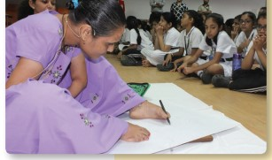

INFORMATION ABOUT ILA SACHANI
In this world, lot of people inspire us, But there are some people who are physically challenged, yet they coninue to inspire others.One among them is Ila Sachani
Ila Sachani was a talented Kathivar embroidery artist, overcame physical challenges to excel her craft. She learned embroidery using her feet under the guidance of her mother and grandmother

The special thing about Ila Sachani was that she was born with a deformity that rendered her arms useless
She is known for her vibrant creation called Kathiawar.
She was born on 19 December 1995
CLICK here to go to Home screen